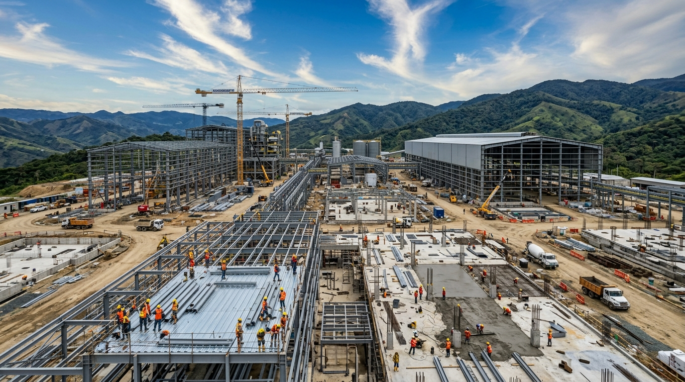
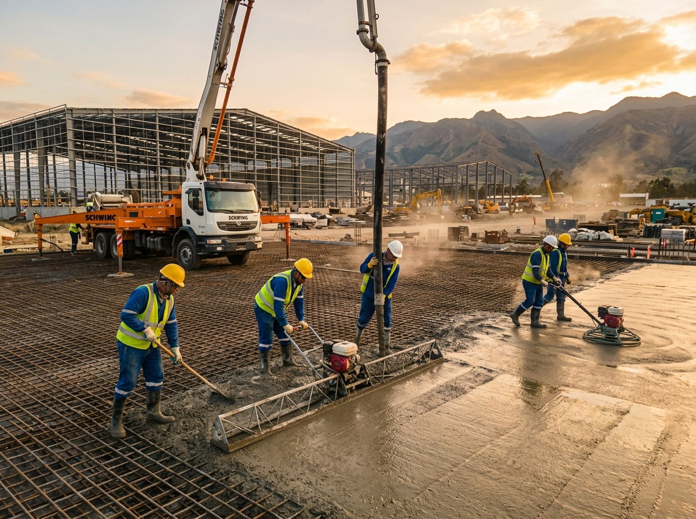
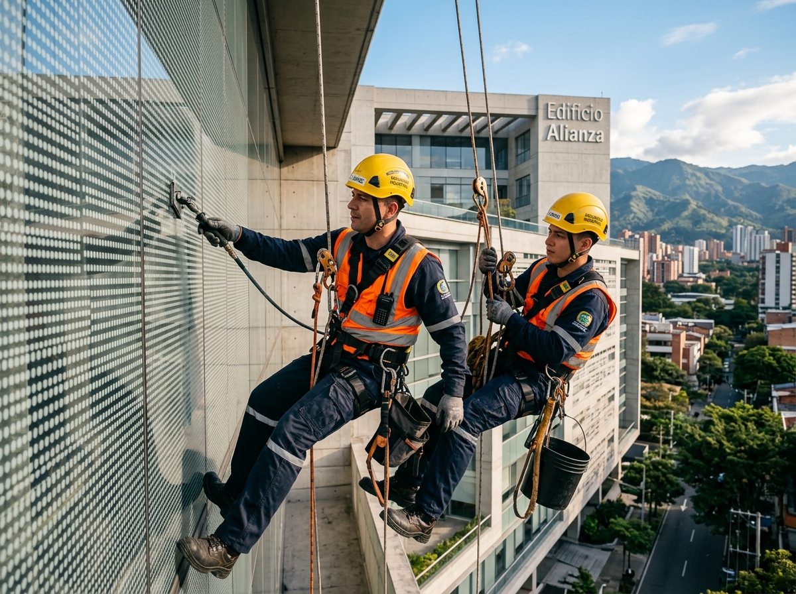
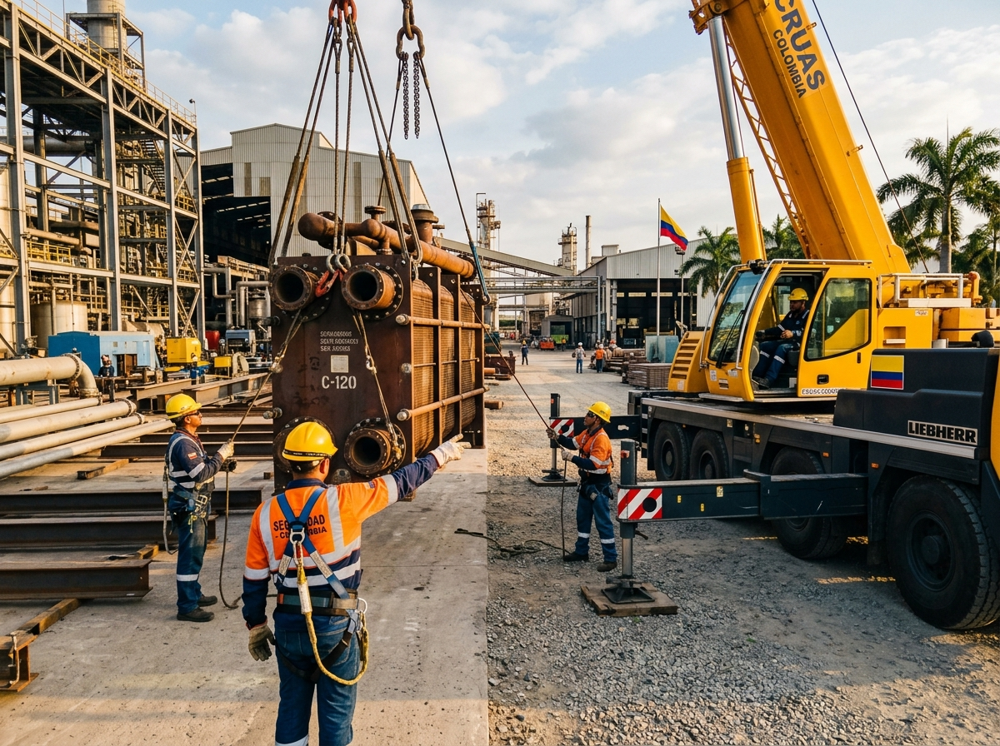
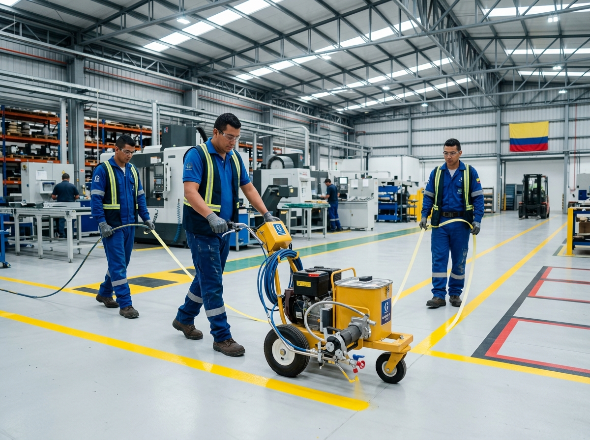

Nuestros Servicios
Soluciones integrales de ingeniería civil e industrial para cada proyecto.

Proyectos de Concretos Reforzado
Ejecutamos proyectos de infraestructura, garantizando la máxima calidad técnica en cada etapa del proceso constructivo de estructuras en concreto reforzado.
- Construcción de losas de concreto
- Muros de contención
- Cimentaciones especiales
- Estructuras de concreto industriales
Proyectos Hidráulicos y Sanitarios
Diseño, planeación y ejecución de redes hidráulicas y sanitarias cumpliendo con todas las especificaciones y normativas de eficiencia y seguridad.
- Redes de acueducto y alcantarillado
- Sistemas de bombeo y almacenamiento
- Tratamiento de aguas
- Instalaciones hidrosanitarias industriales

Mantenimiento industriales
Prestamos servicios de mantenimiento preventivo y correctivo, asegurando el óptimo funcionamiento y la integridad de las infraestructuras.
- Mantenimiento y limpieza de fachadas
- Trabajo en alturas certificado
- Inspección y diagnóstico estructural
- Reparación de cubiertas y techos
Proyectos estructurales
Desarrollo y ejecución de proyectos de estructuras metálicas y en concreto, garantizando estabilidad y resistencia en cada edificación.
- Montajes de estructuras metálicas
- Reforzamiento estructural
- Construcción de naves industriales
- Rigging y maniobras complejas


Proyectos de pavimentos y Geotecnia Vial
Construcción y rehabilitación de pavimentos rígidos y flexibles, apoyados en estudios precisos de geotecnia vial para asegurar la durabilidad de las vías.
- Construcción de pavimentos rígidos
- Pavimentos asfálticos o flexibles
- Estudios de geotecnia vial
- Señalización y demarcación